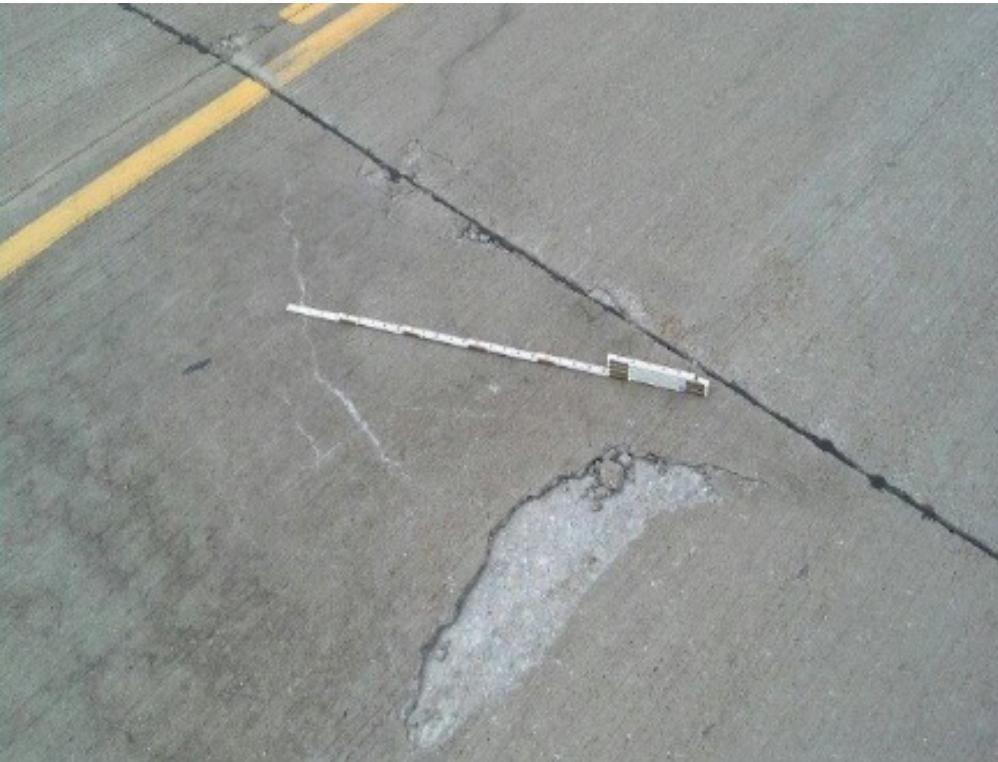
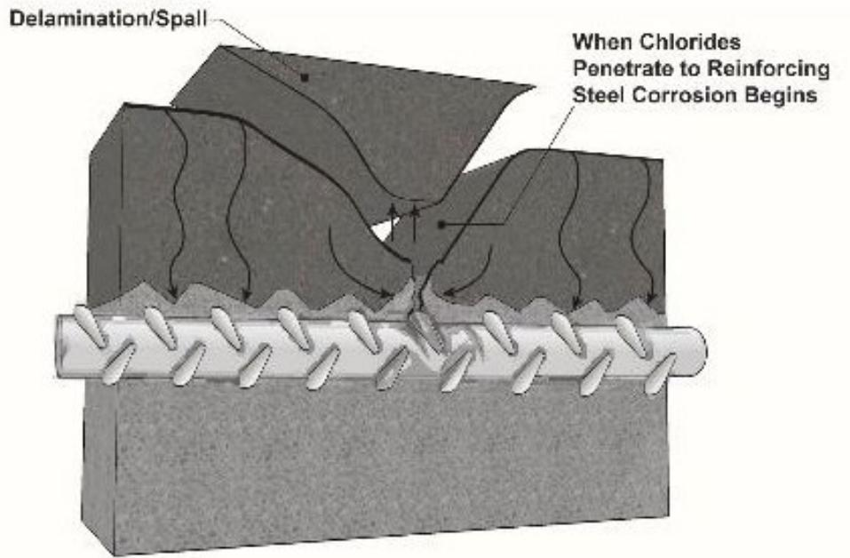
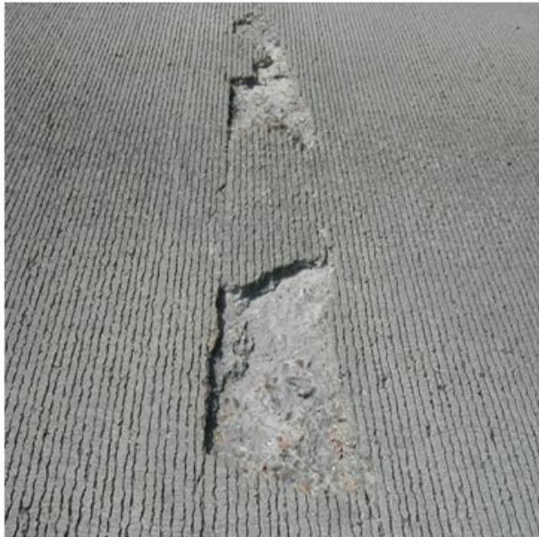

Concrete Bleeding-Induced Surface Defects
Concrete bleeding‑induced surface defects are a weak, non‑durable layer—often appearing as voids, channels or a laitance film—that forms when excess bleed water rises to the face of fresh pavement concrete as heavier cement and aggregate particles settle. This upward migration raises the local water‑to‑cement ratio, creating a thin, moisture‑rich crust that dries rapidly, shrinks, and loses bond strength, leading to cracking, scaling, delamination and reduced surface durability. The occurrence and severity of these defects are governed by mix composition (high w/c ratios, low fines content, absorptive aggregates) and construction practices that allow finishing before bleed water has disappeared, which traps the weakened layer and must be avoided.[1][2][3]
Sources (3)
Material purpose and applicability
Concrete bleeding‑induced surface defects refer to the weak, non‑durable layer—often manifested as voids, channels, or laitance—that forms when excess bleed water rises to the face of fresh pavement concrete as heavier cement and aggregate particles settle. The guides also describe these defects as the cracking, scaling and other distress that develop when bleed water reaches the concrete surface and weakens the top layer. While a small amount of bleeding can help control plastic shrinkage cracking, excessive bleeding raises the local water‑cement ratio, creates gaps beneath aggregates, and produces a thin crust that readily scales, delaminates or cracks. Consequently, the defects reduce surface strength and durability, act as a deterioration mechanism, and provide no beneficial function in the pavement system; they must be avoided by delaying finishing until bleed water has disappeared. [1][2][3]
The figure below illustrates delamination in concrete pavements.

Delamination in concrete pavements [2]The image displays a section of gray pavement containing a large, irregular patch where the surface layer has separated from the underlying slab. This defect is identified as delamination, which involves the development of a horizontal crack resulting in separation of the surface layer from the remaining concrete.
[1] — Ch. 6 (pp. 154–190); [2] — Ch. 3 (pp. 68–72), Ch. 13 (pp. 46–52); [3] — Bleeding (pp. 10–11), Surface Finishing (p. 23)
Composition and characteristics
Concrete bleeding‑induced surface defects are defined by the presence of excess bleed water that rises to the fresh concrete face as heavier particles (coarse aggregate and cement) settle. The defect is rooted in the concrete mix’s basic ingredients—cement paste (including any supplementary cementitious materials) bonded to aggregates that may be highly absorptive (coarse aggregate absorption ≥ 3 % or with a high volume of medium‑sized pores 0.1–5 µm). Concrete bleeding‑induced surface defects occur when water migrates upward as cement and aggregate particles settle, creating a wet skin that can trap bleed water beneath early trowelling. The upward migrating water creates voids beneath large aggregates, channels in the matrix, and a thin, water‑rich coating—often called laitance—that incorporates fine cement particles and exposed fine aggregate (sand streak). This coating raises the local water‑to‑cement ratio, weakens the surface layer, and forms a crust that can trap moisture. The resulting surface zone is thin and weakened: fine cement particles and entrapped air bubbles accumulate as the bleed water dries rapidly, causing shrinkage of the mortar layer. The magnitude of these defects is governed by the mix composition: higher powder content (cement plus supplementary cementitious materials such as fly ash, silica fume, metakaolin) reduces bleeding, while insufficient fines allow more upward water migration; finer particles slow or prevent bleeding, whereas slower‑setting mixes extend the bleed period and increase defect risk. Physical manifestations include map cracking, scaling, delamination, and visible sand streaks. [1][2][3]
[1] — Ch. 6 (pp. 154–190), Ch. 10 (p. 328); [2] — Ch. 3 (pp. 68–72), Ch. 13 (pp. 45–52); [3] — Bleeding (pp. 10–11), Surface Finishing (p. 23)
The guides agree that the composition and proportioning of a concrete mix dominate the amount of bleed water that reaches the exposed face and therefore control the occurrence of surface defects such as cracking, scaling, map‑cracking and delamination. An increase in water content or w/c ratio directly raises the volume of bleed water (“Any increase in the amount of water or in the w/cm ratio results in more water available for bleeding,”) which creates a moisture‑rich skin that dries rapidly, shrinks and loses strength. Conversely, low‑w/c, moderate‑slump mixes limit bleed water and mitigate these defects. The presence of fine particles—whether supplied by higher cement fineness, added powders, or supplementary cementitious materials—suppresses bleeding because the fines remain suspended longer and bind more water (“Bleeding is reduced with increasing fines content and with air‑entraining and/or water‑reducing admixtures.”; “Bleeding is primarily reduced by increasing the amount of fine powder in the mixture”). Increasing cement dosage, using cements rich in alkali or calcium aluminate, and incorporating air‑entraining or water‑reducing admixtures further lower bleed propensity. Aggregate characteristics also matter: highly absorptive coarse aggregate can continue to draw mix moisture after placement, generating internal pressures that lead to pop‑outs and map cracking (“Highly absorptive coarse aggregate (absorption of 3 percent or greater) must be batched at saturated surface dry (SSD) or wetter, or they will otherwise continue to absorb mix water, resulting in workability issues and potential map cracking.”). Processing actions amplify compositional effects; overworking, finishing while bleed water is present, or spraying water during finishing raise the local w/c ratio and seal a weakened layer that readily delaminates. The type of supplementary cementitious material influences bleeding magnitude: silica fume or metakaolin markedly reduce it, slag may increase it slightly, and excessive Class C fly ash (>≈25 %) can reverse the benefit and raise bleed water. Finally, faster‑setting mixes shorten the bleeding period whereas slower‑setting blends prolong it, extending the window during which a soft surface lens can develop. [1][2][3]
[1] — Ch. 6 (pp. 154–180); [2] — Ch. 3 (pp. 68–72), Ch. 13 (pp. 45–52); [3] — Bleeding (pp. 10–11), Surface Finishing (p. 23)
Key material properties
The performance of concrete bleeding‑induced surface defects is governed by interrelated physical, mechanical, chemical and thermal properties.
Physical: The phenomenon originates from “Bleeding is caused by the settlement of solid particles (cement and aggregate) in the mixture and the simultaneous upward migration of water” and also “It is caused by the settlement of solid particles (cement and aggregate) in the mixture and the simultaneous upward migration of water.” The amount and rate of bleed water reaching the face are controlled by particle size distribution, fines content, powder content and cement fineness (“As the fineness of cement increases, the amount of bleeding decreases”; “Bleeding is primarily reduced by increasing the amount of fine powder in the mixture”). Aggregate gradation and the absorptivity of fine aggregates with 0.1–5 µm pores further influence bleed water (“aggregate particles with a high volume of medium-sized pores (0.1 to 5 µm) that are easily saturated, they can absorb moisture”). Mix density and water‑to‑cement ratio dictate bleed potential (“high w/cm ratio mixtures result in more bleed water and reduced surface strength due to an increase in capillary porosity”; “Any increase in the amount of water or in the w/c ratio results in more water available for bleeding”). A uniformly distributed air‑void structure also affects how moisture is accommodated (“The mix should also contain a uniformly distributed air void structure.”).
Mechanical: Upward migration raises the effective w/c ratio in the top layer, creating weak zones, voids under large aggregates and channels that lower surface strength and bond quality (“Excessive bleeding will also increase the effective w/cm ratio at the surface and weaken the surface”; “Excessive bleeding can result in voids under large aggregate particles and the formation of channels through the concrete”). The rising water can form channels through the matrix, significantly increasing permeability. Overworking while bleed water is present weakens the material and promotes delamination (“overworking of the concrete surface while bleed water is present can cause significant weakening of the material at the surface”; “Overworking of the concrete surface too soon after placement can result in trapped bleed water at the surface, resulting in a weakened zone that’s subject to delamination.”). Surface strength, abrasion resistance and shrinkage susceptibility determine vulnerability to cracking, scaling or map‑cracking (“Abrasion resistance is an important property related to the type and quality of the aggregates used, and the compressive strength of concrete”; “Spraying water on the surface during finishing raises the w/c ratio at the surface and creates a weakened layer of mortar that shrinks and leads to the formation of map cracking, scaling, and other surface defects”). Slower setting or delayed stiffening extends the bleeding period (“slower setting will mean that bleeding will continue longer”).
Chemical: Cement characteristics such as fineness, total cement content, alkali or C3A levels directly affect bleeding (“Increasing cement content also reduces bleeding”; “Cement with a high alkali content or a high calcium aluminate (C3A) content will exhibit less bleeding”). Supplementary cementitious materials and blended cements modify bleed behavior (“changing the SCM type and dosage will change bleeding”; “Finer materials will slow bleeding or, in the case of silica fume, prevent it”). Air‑entraining agents keep solid particles in suspension and reduce bleed water (“Air-entraining agents have been shown to significantly reduce bleeding in concrete, largely because the air bubbles appear to keep the solid particles in suspension”), while water‑reducing admixtures lower trapped water (“Water reducers also reduce the amount of bleeding because they release trapped water in a mixture”). Reactive alkalis can trigger expansive reactions when moisture is present, but suitable SCMs suppress this effect (“Concrete mixtures incorporating suitable SCMs added to the mixture or that employ blended cements (mixtures of portland cement, fly ash, and slag cement) are effective means of controlling the deleterious alkali‑silica reaction”).
Thermal: External thermal conditions such as wind, low relative humidity and direct sunlight accelerate surface evaporation, causing rapid drying that traps moisture beneath the finish and amplifies internal stresses (“rapid drying of the surface due to evaporation caused by wind, low relative humidity, or direct sunlight.”). Freeze–thaw resistance depends on air‑void quality; compromised air‑void systems reduce the ability to resist freezing and thawing (“compromise the air void system and reduce the ability of the mixture to resist freezing and thawing”). One set of guides notes that no thermal property is identified as a primary influence on bleed‑related surface defect performance, while another emphasizes these thermal effects; both perspectives are retained. [1][2][3]
[1] — Ch. 6 (pp. 154–190); [2] — Ch. 3 (pp. 68–72), Ch. 13 (pp. 45–52); [3] — Bleeding (pp. 10–11), Surface Finishing (p. 23)
Bleeding‑induced surface defects are characterized by the free water that rises to the top of fresh plastic concrete, a phenomenon defined as bleeding. The amount of this bleed water is quantified using the standard test method ASTM C232/AASHTO T 158, which provides a measurable classification of bleeding intensity; values above normal indicate excessive bleeding that can create voids under large aggregates, surface channels, and an elevated effective w/cm ratio that weakens the concrete surface. Finishing and curing operations are scheduled for when the measured bleed water has ceased and subsequently evaporated. [1]
[1] — Ch. 6 (p. 154)
Behavior and mechanisms
Across the guides, excessive bleeding produces a laitance‑rich surface layer that is intrinsically weak and less durable. When load is applied, the reduced aggregate‑paste and paste‑steel bond diminishes load transfer, so traffic or structural stresses readily initiate map cracking, scaling, delamination, or blister formation. Moisture conditions dominate defect evolution: if surface evaporation outpaces the upward bleed water, the laitance dries and cracks; trapped bleed water beneath aggregates or reinforcement maintains a locally high w/c ratio that promotes capillary porosity and allows water to migrate, further weakening the surface. Temperature cycles, especially freeze–thaw, are less resisted because the weakened mortar cannot accommodate volumetric expansion, leading to pop‑outs and crack propagation. Chemical exposure is accelerated by the increased capillary network; deicing salts and other aggressive solutions penetrate more easily, hastening scaling and corrosion of embedded steel whose protective cover has been compromised by bleed water. Service practices such as overworking or finishing while bleed water is present, and inadequate curing, exacerbate all these mechanisms, reducing abrasion resistance and overall durability. [1][2]
The following figure illustrates how this compromised surface integrity facilitates chloride penetration, leading to spalling of reinforcing steel.

Diagram of chloride-induced corrosion and spalling in reinforced concrete. [2]The figure illustrates a cross-section of concrete containing reinforcing steel, where arrows indicate the inward penetration of chlorides from the surface toward the rebar.
[1] — Ch. 6 (pp. 154–155); [2] — Ch. 13 (pp. 45–52)
The behavior of bleeding‑induced surface defects is governed by a sequence of physical, chemical and mechanical actions. Physically, the process originates from particle segregation: “Bleeding is driven primarily by the physical settlement of heavier particles, which forces excess mix water to rise to the surface.” The upward migration of free water creates a surface layer whose composition is then altered chemically. An elevated local water‑to‑cement ratio expands capillary pores, so “high w/cm ratio mixtures result in more bleed water and reduced surface strength due to an increase in capillary porosity.” Chemical admixtures can modify this tendency; for example, “Air‑entraining agents have been shown to significantly reduce bleeding in concrete, largely because the air bubbles appear to keep the solid particles in suspension.” Finally, mechanical actions during finishing interact with the retained bleed water. When the surface is worked before the water has evaporated, “Finishing while bleed water is present on the surface can cause significant weakening of the material at the surface of concrete and contribute to the formation of map cracking and other surface defects.” The combined effect of particle settlement, binder dilution/porosity, admixture action, and premature mechanical disturbance therefore controls the emergence and severity of cracks, scaling, delamination, and related surface distress. [1][2][3]
[1] — Ch. 6 (pp. 154–190); [2] — Ch. 3 (pp. 68–72), Ch. 13 (pp. 45–52); [3] — Bleeding (pp. 10–11), Surface Finishing (p. 23)
Durability and deterioration
The guides describe that excessive bleeding leaves a surface film of water which initiates a suite of inter‑related deterioration mechanisms. “Excessive bleeding creates a surface film of water that, when excessive, generates several inter‑related deterioration mechanisms.” “The rising water can form channels through the matrix, significantly increasing permeability.” These channels and voids beneath large aggregates or reinforcement raise the effective w/c ratio at the surface, producing a weak, highly permeable laitance layer that is prone to scaling, delamination, blistering, and loss of bond strength. The elevated surface w/c also “Bleed water that remains at the fresh concrete surface creates a locally elevated water‑to‑cement (w/c) ratio and a weakened mortar layer prone to rapid drying shrinkage,” leading to plastic‑shrinkage (map) cracking. Overfinishing or working the slab while bleed water is present traps moisture, forming soft‑lens zones and compromising the uniformly distributed air‑void system, which reduces freeze–thaw resistance. Practices such as sprinkling cement on the bleeding surface “Cement that is sprinkled on the surface in an attempt to absorb bleed water concentrates fines at the surface; these fines will dry rapidly and shrink, leading to additional map cracking.” High‑slump, high w/c mixes increase capillary porosity, exacerbate bleeding, and lower surface compressive strength. Delayed or insufficient curing fails to retain moisture for continued hydration, diminishing surface strength, abrasion resistance, and long‑term durability. In addition, absorptive aggregates can draw moisture into the concrete, causing freeze‑induced expansion that ruptures both aggregate and matrix, producing popouts and surface cracks. Alkali–silica reactivity and other alkali‑aggregate reactions generate expansive gels that crack the matrix, manifesting as map cracks or popouts on the pavement surface. The combined effects—voids/channels, laitance formation, increased surface w/c, plastic‑shrinkage cracking, scaling/delamination, corrosion promotion, air‑void damage, freeze–thaw loss, and alkali‑silica expansion—reduce durability unless mitigated by proper mix design (fines, low w/c, water‑reducing or air‑entraining admixtures), avoidance of early finishing, and prompt adequate curing. “Finer materials will slow bleeding or, in the case of silica fume, prevent it,” providing a means to limit these surface defects. [1][2][3]
The following figure illustrates one of the primary deterioration mechanisms resulting from these excessive bleeding conditions.

Surface delamination in a concrete pavement slab. [2]The image displays a textured concrete surface with two distinct areas where the top layer has separated and flaked away, exposing the rougher material beneath. This visual evidence of delamination is closely related in appearance to scaling and spalling but represents a deeper failure mechanism involving horizontal cracking within the slab.
[1] — Ch. 6 (pp. 154–190), Ch. 10 (p. 328); [2] — Ch. 3 (pp. 68–72), Ch. 13 (pp. 45–52); [3] — Bleeding (pp. 10–11), Surface Finishing (p. 23)
The guides concur that mixes lacking fine particles, having high water‑to‑cement ratios or excessive workability, and missing air‑entraining or water‑reducing admixtures promote excess bleed water. As one source states, “Excessive bleeding will also increase the effective w/cm ratio at the surface and weaken the surface,” creating a weak laitance layer that cracks or scales. High w/c mixes further reduce surface strength; “high w/cm ratio mixtures result in more bleed water and reduced surface strength due to an increase in capillary porosity.” The susceptibility is lowered when fine content is increased: “Bleeding is reduced with increasing fines content and with air‑entraining and/or water‑reducing admixtures,” and when very fine powders are used: “Bleeding is primarily reduced by increasing the amount of fine powder in the mixture, reducing workability and entraining air.” Exposure conditions that increase risk include finishing or over‑working while bleed water remains, spraying water, or rapid drying from wind, low humidity or sunlight; these actions seal a fragile crust. Mitigation requires delaying finish operations until bleed water has disappeared and applying proper curing to preserve surface integrity. [1][2][3]
[1] — Ch. 6 (pp. 154–190); [2] — Ch. 3 (pp. 68–72), Ch. 13 (pp. 45–52); [3] — Bleeding (pp. 10–11), Surface Finishing (p. 23)
Material interactions and compatibility
The phenomenon begins with “Bleeding is the appearance of water at the surface of newly placed, plastic concrete due to settlement of the heavier particles.” As the cement paste and coarse aggregate settle, water migrates upward, and “Excessive bleeding can result in voids under large aggregate particles and the formation of channels through the concrete,” weakening the aggregate‑paste bond and creating pathways for moisture ingress. The magnitude of this interaction is governed by the fine solid fraction: “Bleeding is primarily controlled by the powder content of the mixture and the rate of hydration,” so finer cement or supplementary powders such as silica fume slow or even prevent water rise, while slower‑setting binders extend the bleeding period. Chemical admixtures and supplemental cementitious materials further modify the process; “because of the extensive use of chemical admixtures and supplemental cementitious materials (SCMs) in concrete mixes, bleed water may not readily rise to the surface.” Consequently, highly absorptive coarse aggregates that continue to draw mix water can increase local w/c demand, and delayed finishing when bleed water is present amplifies surface laitance, cracking or scaling. [1][2][3]
[1] — Ch. 6 (pp. 154–180), Ch. 10 (p. 328); [2] — Ch. 3 (pp. 68–72), Ch. 13 (pp. 45–52); [3] — Bleeding (pp. 10–11), Surface Finishing (p. 23)
The guides note several compatibility risks that can exacerbate bleeding‑induced surface defects. Bleed water that rises to the surface can collect beneath large aggregates or reinforcing bars, weakening the aggregate‑paste and paste‑steel bonds and creating a less protective environment for steel; this increases the risk of corrosion. A high proportion of very fine particles such as silt or clay passing the #200 sieve suppresses bleed water, altering the moisture condition at the surface and raising the likelihood of cracking or scaling. Shrinkage restraint is also identified as a compatibility risk: restrained drying shrinkage of the surface layer after set can produce map cracking when finishing is done over bleed water or with an overly wet mix. Clay‑laden or highly absorptive aggregates—those containing appreciable amounts of shale, soft and porous materials such as clay lumps or other deleterious material—can absorb moisture, freeze, expand and generate popouts that intersect bleed‑induced cracks. Reactive aggregates present a chemical compatibility risk; Alkali‑silica reactivity (ASR) is the most common form of AAR and is a chemical reaction between reactive silica in the aggregate and the alkalis present in the pore solution of the hydrated cementitious paste, so ASR‑susceptible aggregates should be avoided or mitigated with appropriate supplementary cementitious materials. The guides do not identify additional compatibility concerns related to sulfates, organic contaminants, dissimilar construction materials, further corrosion mechanisms beyond bleed‑water accumulation, or other forms of chemical attack. [1][2]
[1] — Ch. 6 (pp. 154–180); [2] — Ch. 13 (pp. 45–52)
Influence of production and placement
Mix design choices that increase fines, employ air‑entraining or water‑reducing admixtures, and maintain a low water‑cement ratio limit the volume of free water that can migrate to the surface, thereby reducing bleed water formation. Likewise, mixing a concrete with a low w/c ratio, fine cement particles, and a uniformly distributed air‑void system reduces the mix’s saturation potential and limits the amount of bleed water that can rise to the surface. During placement the natural settlement of cement and aggregate particles drives water upward; excessive compaction or over‑working can trap this moisture within a laitance layer, creating channels or voids beneath larger aggregates. Finishing should be delayed until the bleed water has evaporated; if the surface has been troweled too early, the bleed water can be trapped at or below the surface, later resulting in a poor quality skin and/or blisters, which manifest as scaling, delamination, or map cracking. Prompt curing, preferably with continuous wet methods or a curing compound applied immediately after finishing, stabilizes the hardened paste, prevents restrained drying shrinkage of the thin skin, and preserves strength and durability of the exposed concrete. [1][2][3]
[1] — Ch. 6 (pp. 154–190); [2] — Ch. 3 (pp. 68–72), Ch. 13 (pp. 45–52); [3] — Bleeding (pp. 10–11), Surface Finishing (p. 23)
Construction‑stage actions that disturb the moisture balance at the concrete face are identified across the guides as the primary drivers of long‑term bleeding‑induced surface defects. Excessive bleed water that reaches the surface and is not allowed to evaporate before skin work creates a weak, permeable layer prone to scaling, delamination, and channel formation. Premature or over‑finishing while this water remains traps it beneath or within the skin, producing soft lenses, blisters, and a laitance film that compromises strength and durability. The resulting localized increase in the effective water‑to‑cement ratio generates shrinkable mortar zones that manifest as map cracking, scaling, and reduced resistance to freeze–thaw cycles. Proper sequencing—allowing bleed water to disappear before any troweling or finishing—and avoiding practices such as spraying water, adding water as a finishing aid, or overworking the surface are therefore essential to mitigate these defects. [1][2][3]
[1] — Ch. 6 (pp. 154–190), Ch. 10 (p. 328); [2] — Ch. 3 (pp. 68–72), Ch. 13 (pp. 45–52); [3] — Bleeding (pp. 10–11), Surface Finishing (p. 23)
Selection, specification, and improvement
The guides agree that the specification of concrete for applications sensitive to bleeding‑induced surface defects is based on a set of interrelated criteria aimed at keeping bleed water within an acceptable range while preserving workability and durability. “Some bleeding helps avoid plastic cracking in the surface, which can occur when water evaporating from the surface causes the surface to dry quickly,” so mix designs provide enough bleed water to prevent early drying but limit excess that creates voids. Cement selection emphasizes the finest practicable cement at a relatively high dosage, because “As the fineness of cement increases, the amount of bleeding decreases”; cements with higher alkali or calcium aluminate (C3A) content are preferred. Aggregate gradation must include sufficient fines—silt, clay, particles passing the #200 sieve—to suppress upward water migration, as “Bleeding is reduced with increasing fines content and with air‑entraining and/or water‑reducing admixtures.” Accordingly, air‑entraining or water‑reducing admixtures are incorporated. Slump control follows the principle “Use moderate slump mixtures (generally, with a low w/cm ratio).” Higher slumps are allowed only when they do not generate excessive bleed water. Placement and finishing practices require that finishing begin after the bleed layer has disappeared; over‑working, spraying water, or adding cement while bleed water is present must be avoided. Immediate moisture‑retaining curing—covering with curing compound or wet burlap—and proper stockpile management maintain a balanced moisture condition. Environmental conditions that accelerate surface drying (wind, low relative humidity, direct sunlight) are mitigated through windbreaks, shading, or misting to prevent rapid evaporation and the formation of a weakened delaminated zone. [1][2][3]
[1] — Ch. 6 (pp. 154–180); [2] — Ch. 3 (p. 68), Ch. 13 (pp. 46–52); [3] — Bleeding (pp. 10–11), Surface Finishing (p. 23)
The guides agree that controlling bleed water begins with a mix design that limits free water and keeps cement particles in suspension. Use Moderate Slump Mixtures with Low w/cm Ratios to keep excess water from rising, and increase the proportion of ultra‑fine powders—silica fume, metakaolin, or Class F fly ash—to lock water within the paste. Bleeding is reduced with increasing fines content and with air‑entraining and/or water‑reducing admixtures; air‑entraining agents have been shown to significantly reduce bleeding in concrete. A finer‑grade cement or a higher overall cement dosage, especially cements rich in alkalis or calcium aluminate (C3A), further suppresses bleed water. Silica fume can greatly reduce, or often stop, bleeding, largely because of the extreme fineness of the particles.
Aggregate selection must provide adequate fine material (material passing a #200 sieve) and avoid highly absorptive coarse aggregate unless batched in a saturated‑surface‑dry condition. Quality control includes bleed testing per ASTM C232/AASHTO T158, verification of aggregate gradation, and petrographic evaluation of aggregates for reactive minerals; trial slabs are recommended when new SCM combinations are introduced.
Finishing should be delayed until all bleed water has evaporated; over‑finishing, spraying water, or adding dry cement while bleed is present must be avoided. Immediate curing—either with an approved curing compound applied at the specified rate or by wet methods such as fog spray or wet burlap—for at least three days protects the surface from rapid drying and scaling. [1][2][3]
[1] — Ch. 6 (pp. 154–190); [2] — Ch. 3 (p. 68), Ch. 13 (pp. 45–52); [3] — Bleeding (pp. 10–11), Surface Finishing (p. 23)
Performance evaluation and implications
Across the guides, laboratory evaluation of bleeding‑induced surface defects is anchored by standard fresh‑concrete bleed‑water tests (ASTM C232/AASHTO T 158) that quantify the amount and rate of water rising to the surface. When new cementitious blends are introduced, trial slabs are prepared so that the onset and magnitude of bleeding can be measured and the appropriate finishing window established. In the field, practitioners verify that finishing and curing operations are timed after bleeding has ceased—checking for voids or channels beneath large aggregates and observing any surface cracking or scaling that result from excess surface moisture. Long‑term durability is inferred by examining the hardened surface after cure; reduced bleeding achieved through higher fines content or suitable admixtures correlates with stronger, less deteriorated surfaces, although specific long‑term performance data are not cited for ternary mixtures. [1][3]
[1] — Ch. 6 (p. 154); [3] — Surface Finishing (p. 23)
The phenomenon of concrete bleeding creates a moisture‑rich skin at the slab surface that directly compromises pavement performance. The upward migration of water raises the local water‑to‑cement ratio, producing a weak, nondurable layer that is prone to shrinkage and cracking. Fine cement particles entrained by the bleed water form a laitance film, further reducing surface strength and increasing permeability through channels in the matrix. As a result, load‑carrying capacity declines, map cracking, scaling, and delamination become more likely, and the slab’s resistance to abrasion, freeze‑thaw cycles, and long‑term durability is diminished, leading to accelerated maintenance needs. To preserve structural integrity, designers are required to limit w/c ratios, increase powder (fines) content, and incorporate water‑reducing or air‑entraining admixtures that suppress bleed. Construction practices must allow the bleed water to evaporate before any finishing operation; overworking, hand‑pour troweling, or spraying water while bleed is present must be avoided, and prompt, adequate curing should be applied to seal the surface. By controlling bleeding through mix design and construction timing, the formation of weak skins and channels is minimized, thereby extending service life and reducing future repair costs. [1][2][3]
[1] — Ch. 6 (pp. 154–190); [2] — Ch. 3 (pp. 68–72), Ch. 13 (pp. 45–52); [3] — Bleeding (pp. 10–11), Surface Finishing (p. 23)
References
- Integrated Materials and Construction Practices for Concrete Pavement: A State-of-the-Practice Manual (2nd edition IMCP Manual, 2019) [link]
- Guide for Concrete Pavement Distress Assessments and Solutions: Identification, Causes, Prevention, and Repair (Distress Manual–2018) [link]
- The Use of Ternary Mixtures in Concrete (Manual–2014) [link]